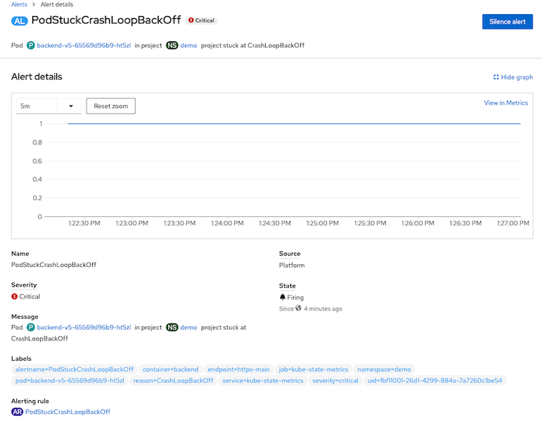
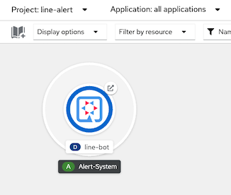
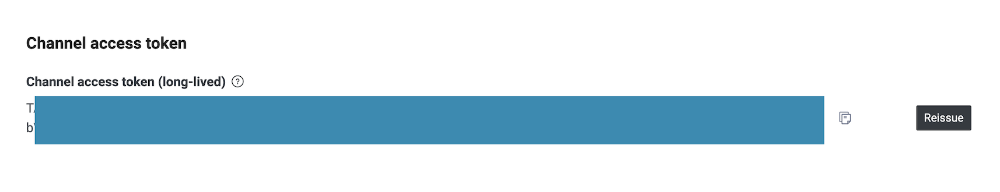
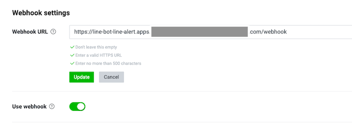
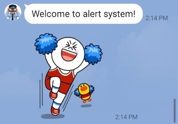
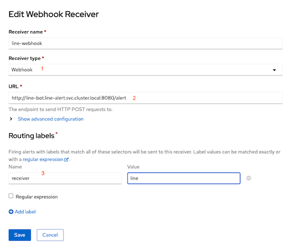
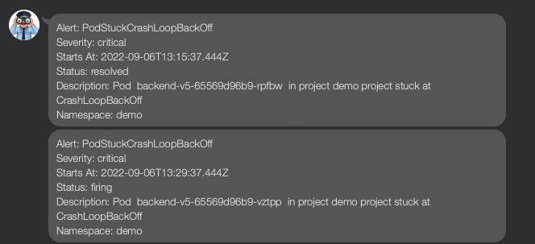

Custom Monitoring
Monitor Pod Creation
Create custom alerts to monitor for pod creating status with PrometheusRule pod-stuck-alerts.yaml
This PrometheusRule will sending alerts if pod status
- PodStuckContainerCreating for 2 minutes
- PodStuckImagePullBackOff for 30 seconds
- PodStuckErrImagePull for 2 minuts
- PodStuckCrashLoopBackOff for 2 minutes
- PodStuckCreateContainerError for 2 minutes
- OOMKilled for 3 minutes
Monitor Project Quotas
Create custom alerts to monitor for project quotas with PrometheusRule quota-alert.yaml
This PrometheusRule will sending alerts if
- Project used CPU/memory request/limits more than 90% will alert with critical severity
- Project used CPU/memory request/limits more than 80% and less than 90% with warning severity
Cluster Level
Create PrometheusRule in namespace openshift-monitoring
oc create -f manifests/pod-stuck-alerts.yaml oc create -f manifests/quota-alert.yamlCheck alerting rules

View alerting rules cpuRequestQuotaCritical

Test Alert
CrashLoopBackOff and ImagePullBackOff
Create following pod-stuck deployments. These deployments intentionally put pods into error state.
oc create -f manifests/pod-stuck.yaml -n demoCheck for result
oc get pods -n demoSample result
NAME READY STATUS RESTARTS AGE backend-v5-65569d96b9-ht5zl 0/1 CrashLoopBackOff 1 (8s ago) 13s backend-v6-794c9fc748-hgpl2 0/1 ImagePullBackOff 0 13s
Check for alerts on Notifications menu

Administrator -> Overview

Check for details of an alert

OOMKilled
Create following memory-hungry deployments. These deployments intentionally put pods into error state.
oc create -f manifests/memory-hungry.yaml -n demoCheck for result
oc get pods -n demoGet route to access memory-hungry app
HUNGER=https://$(oc get route memory-hungry -n demo -o jsonpath='{.spec.host}')Run following command
curl -s $HUNGER/eat/6Check application log
2022-10-25 09:03:05,745 INFO [io.quarkus] (main) leak 1.0.0-SNAPSHOT native (powered by Quarkus 2.13.1.Final) started in 0.202s. Listening on: http://0.0.0.0:8080 2022-10-25 09:03:05,745 INFO [io.quarkus] (main) Profile prod activated. 2022-10-25 09:03:05,745 INFO [io.quarkus] (main) Installed features: [cdi, resteasy, smallrye-context-propagation, smallrye-health, smallrye-metrics, smallrye-openapi, vertx] 2022-10-25 09:55:54,697 INFO [com.exa.HungryResource] (executor-thread-0) Prepare meal for dish no. 1 2022-10-25 09:55:54,845 INFO [com.exa.HungryResource] (executor-thread-0) Allocated 10485760 bytes 2022-10-25 09:55:54,845 INFO [com.exa.HungryResource] (executor-thread-0) Prepare meal for dish no. 2 2022-10-25 09:55:55,141 INFO [com.exa.HungryResource] (executor-thread-0) Allocated 10485760 bytes 2022-10-25 09:55:55,142 INFO [com.exa.HungryResource] (executor-thread-0) Prepare meal for dish no. 3 2022-10-25 09:55:55,346 INFO [com.exa.HungryResource] (executor-thread-0) Allocated 10485760 bytes 2022-10-25 09:55:55,346 INFO [com.exa.HungryResource] (executor-thread-0) Prepare meal for dish no. 4 2022-10-25 09:55:55,641 INFO [com.exa.HungryResource] (executor-thread-0) Allocated 10485760 bytes 2022-10-25 09:55:55,641 INFO [com.exa.HungryResource] (executor-thread-0) Prepare meal for dish no. 5Check for alert in console

Check pod with oc get pod
-o yaml containerStatuses: - containerID: cri-o://c3cb6a9b2a967f35bda906e5e20b1d22c1c4f8f1dc15d2e797618e1f8438f7fb image: quay.io/voravitl/leak:native imageID: quay.io/voravitl/leak@sha256:f74d7653c2ebf71144f16019143b9849fff3f3491e4ec199fab6db51dab02b8f lastState: terminated: containerID: cri-o://08f70b1f69bc00906edaa17241d300abf2df4b356c13b7dd1896eae5b0bb6760 exitCode: 137 finishedAt: "2022-11-03T07:03:06Z" reason: OOMKilled startedAt: "2022-11-03T06:56:55Z"
Alert with LINE
- Login to LINE Developer and create Channel
Deploy LINE BOT app
oc new-project line-alert oc create -f manifests/line-bot.yaml -n line-alertVerify deployment

Update line-bot deployment environment variable API_LINE_TOKEN with your channel access token
Channel access token

Update Environment variable
Developer Console

CLI
oc set env -n line-alert deployment/line-bot API_LINE_TOKEN- oc set env -n line-alert deployment/line-bot API_LINE_TOKEN=$API_LINE_TOKEN
Update your Channel's Webhook with line-bot route
Webhook URL
LINE_WEBHOOK=https://$(oc get route line-bot -n line-alert -o jsonpath='{.spec.host}')/webhook echo $LINE_WEBHOOKConfigure Line BOT Webhook to your channel

Send some message to your LINE BOT and check line-bot pod's log
```bash
2022-09-06 06:47:14,766 INFO [com.vor.LineBotResource] (executor-thread-0) Message Type: text
2022-09-06 06:47:14,766 INFO [com.vor.LineBotResource] (executor-thread-0) Message: Hi
2022-09-06 06:47:14,766 INFO [com.vor.LineBotResource] (executor-thread-0) userId: U*************, userType: user
2022-09-06 06:47:14,767 INFO [com.vor.LineBotResource] (executor-thread-0) replyToken: 0a5b7*********
```
Register your LINE account to receiving alert by send message register to LINE BOT

line-bot pod's log
2022-09-06 07:14:04,915 INFO [com.vor.LineBotResource] (executor-thread-0) destination: Uef7db62e42ed955b58d9810f64955806 2022-09-06 07:14:04,916 INFO [com.vor.LineBotResource] (executor-thread-0) Message Type: text 2022-09-06 07:14:04,916 INFO [com.vor.LineBotResource] (executor-thread-0) Message: Register 2022-09-06 07:14:07,142 INFO [com.vor.LineBotResource] (executor-thread-0) Register user: U************* 2022-09-06 07:14:07,143 INFO [com.vor.LineBotResource] (executor-thread-0) userId: U*************, userType: user 2022-09-06 07:14:07,143 INFO [com.vor.LineBotResource] (executor-thread-0) replyToken: 741b1*********Configure Alert Manger Webhook
Administrator Console, Administration->Cluster Settings->Configuration and select Alertmanager

Create Receiver

Check that PrometheusRule pod-stuck contains label receiver with value equals to line for each alert
- alert: PodStuckErrImagePull annotations: message: Pod in project project stuck at ErrImagePull description: Pod in project project stuck at ErrImagePull expr: kube_pod_container_status_waiting_reason{reason="ErrImagePull"} == 1 for: 30s labels: severity: critical receiver: 'line'
Create deployment with CrashLoopBackoff
oc create -f manifests/pod-stuck -n demo watch oc get pods -n demoCheck LINE message

LINE BOT Configuration
Use following enviroment variables to configure LINE BOT
| Variable | Description |
|---|---|
| APP_LINE_TOKEN | LINE Channel Token |
| QUARKUS_LOG_CATEGORYCOM_VORAVIZLEVEL | Set to DEBUG if you want to log whole JSON message from AlertManager |
| APP_ALERT_ANNOTATIONS | List of attributes from Annotations to including in message |
Alert Rule annotaions
- alert: PodStuckCrashLoopBackOff
annotations:
summary: CrashLoopBackOff in project {{ $labels.namespace }}
message: Pod {{ $labels.pod }} in project {{ $labels.namespace }} project stuck at CrashLoopBackOff
description: Pod {{ $labels.pod }} in project {{ $labels.namespace }} project stuck at CrashLoopBackOff